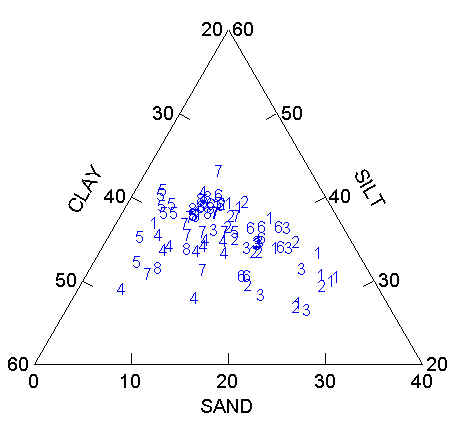
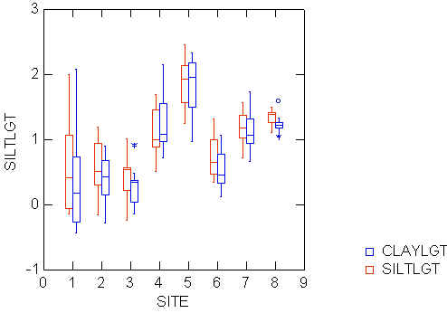

| / Home |
Keywords: compositional data, continuous proportions
The proportions of sand, silt and clay in soil samples are given for 8 contiguous sites. The sites extended over the crest and flank of a low rise in a valley underlain by marl near Albudeite in the province of Murcia, Spain. The sites were small areas of ground surface of uniform shape internally and delimited by relative discontinuities externally. Soil samples were obtained for each site at 11 random points within a 10m by 10m area centred on the mid-point of the site. All samples were taken from the same depth. The data give the sand, silt and clay content of each sample, expressed as a percentage of the total sand, silt and clay content.
The purpose of the study by Wright and Wilson (1979) was to determine whether the sites could be differentiated on the basis of their soil composition.
| Variable | Description | ||
| Site | 1-8 | ||
| Sand | Percent sand | ||
| Silt | Percent silt | ||
| Clay | Percent clay | ||
Data File (tab-delimited text)
| Wright, R. L., and Wilson, S. R. (1979). On the analysis of soil variability, with an example from Spain. Geoderma 22, 297-313. |
| Andrews, D. F., and Herzberg, A. M. (1985). Data. A collection of problems from many fields for the student and reseach worker. Springer, New York. Data Set 18. |
| The raw data was obtained in electronic form from the Statlib database. |
The Silt and Clay proportions are jointly normal to a good approximation after a multivariate logistic transformation. The sites differ in variances as well as in their means.
A plot of the samples in the simplex:

Box plots after computing logistic transforms SILTLGT = log(SILT/SAND) and CLAYLGT = log(CLAY/SAND):

|
Home - About Us -
Contact Us Copyright © Gordon Smyth |